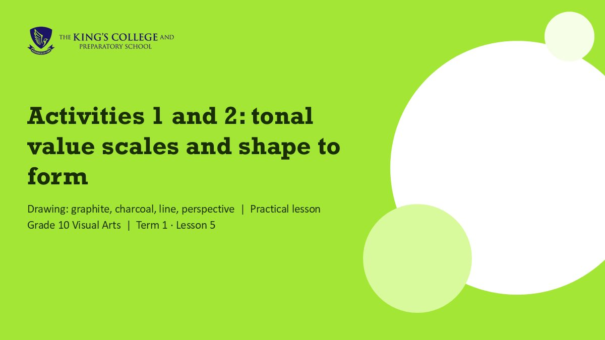

Term 1 · Lesson 5 · Practical lesson
Activities 1 and 2: Tonal Value Scales and Shape to Form
Start Here
Today I Will
- Know what each pencil grade from 2H to 8B can do
- Shade smooth gradations without steps
- Turn a circle into a sphere with six different shading techniques
How can a flat circle on paper start to look like a ball you could pick up?
Words to Know
| Word | Meaning |
|---|---|
| Value scale | A strip that moves from the darkest dark to white, showing every tone in between. |
| Gradation | A smooth change from dark to light with no visible steps. |
| Hatching | Shading with rows of parallel lines; closer lines look darker. |
| Stippling | Shading with dots; more dots close together look darker. |
| Core shadow | The darkest band on a form, on the side turned away from the light. |
| Cast shadow | The shadow a form throws onto the surface beside it. |
Slides

Notes
Tone creates form. Six graded strips (2H to 8B) shaded from dark to white; six spheres, each in a different shading technique (hatching, cross-hatching, cross-contour, scumbling, stippling, blending), all lit from one direction.
Six Pencils, Six Strips
- Rule the strips: Six strips about 3 cm by 12 cm, one for each pencil: 2H, HB, 2B, 4B, 6B and 8B.
- Start dark: Press firmly at one end to find the darkest tone that pencil can make.
- Ease off: Lighten your pressure little by little towards the other end.
- Melt into white: Finish on clean paper, with no line where the tone stops.
- Label and compare: Write the grade under each strip and note which pencils suit lights, mid-tones and darks.
Six Ways to Shade a Sphere
- Hatching: Parallel lines, closer together in the shadows.
- Cross-hatching: Layers of lines crossing at angles to build darker tones.
- Cross-contour: Curved lines that follow the round surface like lines of latitude.
- Scumbling: Small, overlapping scribbled circles, built up in layers.
- Stippling: Dots, packed tightly in the shadow and spread out towards the light.
- Blending: Smooth graphite softened with a stump or tissue.
Shape is what you draw; tone is what makes it real.
Practical
You need: 2H to 8B pencils, blending stump, erasers, A3 visual journal
Activities 1 and 2: Tone Creates Form
- Activity 1: rule six strips and shade one with each pencil, from its darkest tone to white paper.
- Label each strip with its pencil grade.
- Activity 2: draw six circles of about 5 cm and mark one light direction with a small arrow.
- Shade the first sphere in hatching and the second in cross-hatching, with highlight, core shadow, reflected light and cast shadow.
- Label each technique beside its sphere.
- Finish the other four spheres at home: cross-contour, scumbling, stippling and blending.
Activities 1 and 2 are handed in on Thursday 28 January (Week 3).
Test Yourself
- Which pencil makes the darker mark: a 2H or a 6B?
- Name three shading techniques for a sphere.
- Why should all six spheres share one light direction?
Show answers
1. The 6B. 2. Any three of hatching, cross-hatching, cross-contour, scumbling, stippling and blending. 3. So that you practise placing the highlight and shadows consistently, as you will in the still life.
Finished Early?
Try the techniques on a form that is not quite round.
- Draw six small egg shapes in your VJ.
- Shade each one with a different technique from today.
- Keep the light from the same side on all six.
- Star the technique that showed the form best and say why.